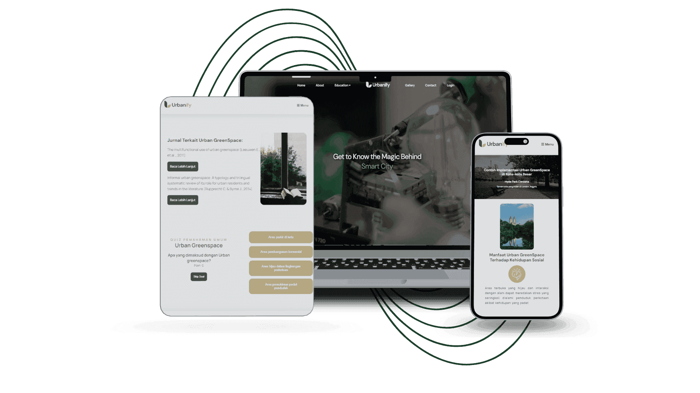
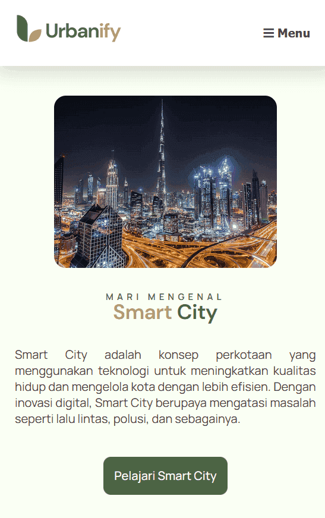
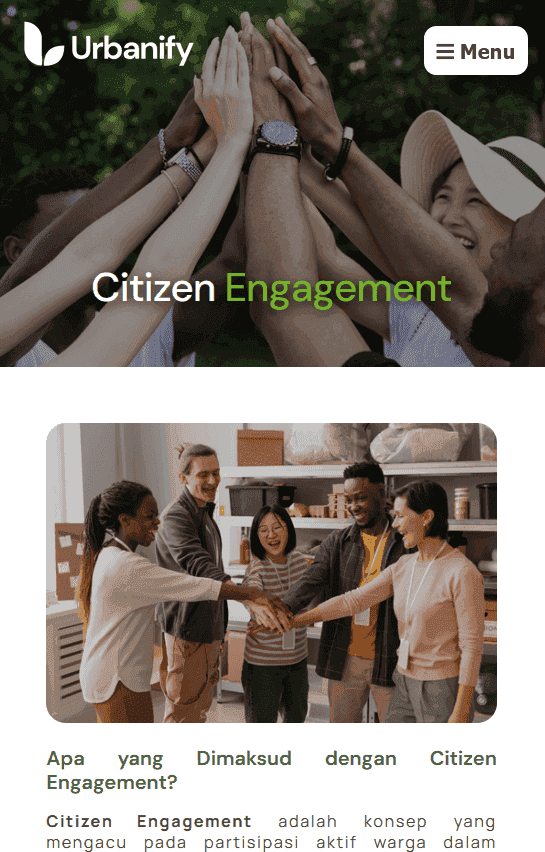
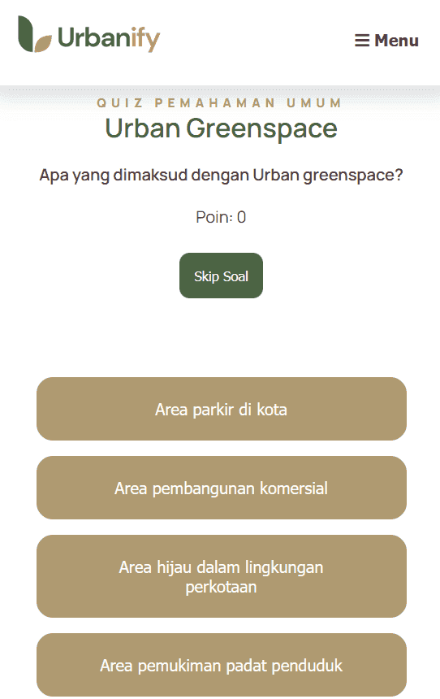
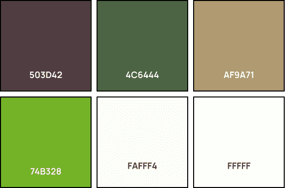

Tentang Kami
Urbanify adalah website edukasi lengkap dan interaktif mengenai Smart City
dengan 4 elemen pembentuknya.
Urbanify merupakan inisiatif edukatif yang berfokus pada transformasi dan peningkatan aspek-aspek
perkotaan menuju terciptanya kota yang lebih baik dan cerdas. Nama "Urbanify"
berasal dari gabungan kata "Urban," yang berarti perkotaan, dan akhiran "-ify,"
yang berarti "membuat menjadi" atau "mengubah."
Bidang pertama yang menjadi fokus Urbanify adalah Smart Environment atau lingkungan cerdas.
Ini mencakup penerapan teknologi mutakhir untuk memantau kualitas udara, mengelola limbah,
dan mengoptimalkan penggunaan energi. Dengan pendekatan ini, Urbanify mendorong terciptanya
kota yang lebih ramah lingkungan dan berkelanjutan, sehingga meningkatkan kualitas hidup penduduk.
Selanjutnya, Urban Greenspace atau ruang hijau kota memainkan peran penting dalam menyediakan area
terbuka yang nyaman dan sehat bagi masyarakat. Selain memperindah kota, ruang hijau juga berfungsi
sebagai penyaring polusi udara dan tempat rekreasi yang memperkuat kesehatan fisik dan mental masyarakat.
Di sisi lain, Urbanify juga menitikberatkan pada IoT Application dan Citizen Engagement. Melalui aplikasi
Internet of Things (IoT), kota dapat memanfaatkan data real-time untuk mengelola lalu lintas,
pencahayaan jalan, hingga keamanan dengan lebih efisien. Sementara itu, keterlibatan masyarakat
atau citizen engagement memberikan kesempatan bagi warga
untuk berperan aktif dalam pembangunan kota, baik melalui ide-ide,
pengambilan keputusan, maupun pelaporan masalah.

Tentang Nama dan Logo Kami
Nama Kami
Urbanify adalah kombinasi dari kata "Urban," yang berarti perkotaan, dan akhiran "-ify," yang bermakna "membuat menjadi" atau "mengubah," sehingga nama ini menggambarkan sebuah upaya untuk mentransformasi atau meningkatkan aspek-aspek kehidupan kota. Dengan fokus pada inovasi dan teknologi, Urbanify bertujuan menciptakan kota yang lebih efisien, berkelanjutan, dan responsif terhadap kebutuhan masyarakat.

Logo Kami
Logo Urbanify menampilkan teks dengan warna hijau pada "Urban" dan cokelat pada "Ify," dilengkapi helai daun hijau melambangkan masyarakat luas yang berkelanjutan serta daun cokelat di seberangnya yang menggambarkan integrasi urbanisasi melalui smart city.
Tentang Konsep Desain Kami
Simplicity

Visually Appealing

Easy to Navigate


Color Pallete yang Simpel & Atraktif.
Jelajahi Urbanify dengan Kombinasi Warna Terbaik.